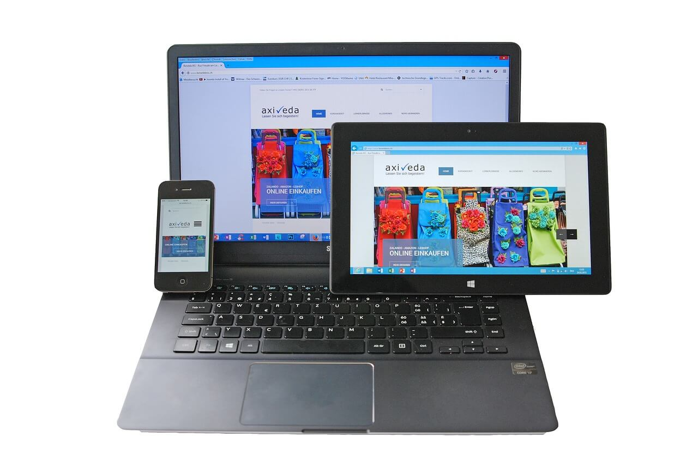

Introduction to Bootstrap
What is Bootstrap?
— Bootstrap is an open-source front-end framework for developing responsive, mobile-first websites.
— It includes HTML, CSS, and JAVASCRIPT components.
What does it do?
— It provides a consistent pre-built and pre-designed elements that helps enhance the process of web development.
— Also, it already makes it responsive for you without you writing custom CSS.